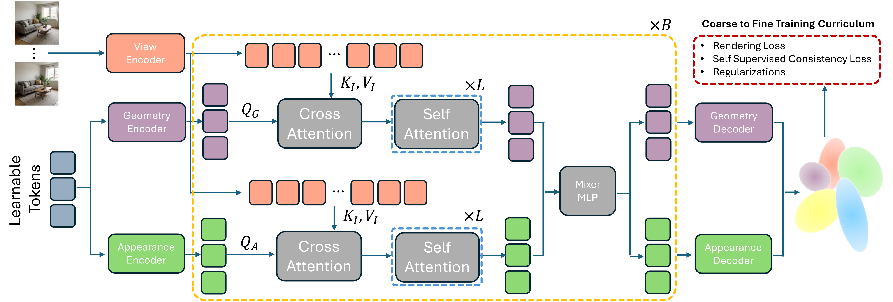

GlobalSplat is a feed-forward 3D Gaussian Splatting method that learns a compact set of global scene tokens instead of allocating primitives per pixel. By aligning first and decoding later, it produces globally consistent reconstructions with as few as 2K-32K Gaussians, a tiny disk footprint, and fast single-pass inference, while matching or surpassing the quality of dense baselines.
QUALITATIVE RESULTS
RE10K & ACID COMPARISON
Qualitative comparison on RealEstate10K and ACID against baseline methods. GlobalSplat successfully preserves high-frequency details and multi-view consistency despite a strictly constrained primitive budget.
12-VIEWS QUALITATIVE VIDEO COMPARISON
COMPACTNESS ABLATION (RE10K)
We compare Our 2K, 16K, and 32K Gaussian variants to visualize the quality-compactness trade-off. As the Gaussian budget increases, details improve while remaining compact.
ULTRA-COMPACT COMPARISON
We directly compare C3G and Our 2K variant to visualize performance under a very small representation budget. This comparison shows that even in the ultra-compact regime, our method remains superior.
3D GEOMETRY VISUALIZATION
Visualization of our Gaussian mean prediction of our 32K variant, highlighting compactness, dynamic allocation and geometry coherence.
QUANTITATIVE RESULTS
Abstract
The efficient spatial allocation of primitives serves as the foundation of 3D Gaussian Splatting, as it directly dictates the synergy between representation compactness, reconstruction speed, and rendering fidelity. Previous solutions, whether based on iterative optimization or feed-forward inference, suffer from significant trade-offs between these goals, mainly due to the reliance on local, heuristic-driven allocation strategies that lack global scene awareness. Specifically, current feed-forward methods are largely pixel-aligned or primitive-aligned. By unprojecting pixels into dense, view-aligned primitives, they bake redundancy into the 3D asset. As more input views are added, the representation size increases and global consistency becomes fragile.
To this end, we introduce GlobalSplat, a framework built on the principle of align first, decode later. Our approach learns a compact, global, latent scene representation that encodes multi-view input and resolves cross-view correspondences before decoding any explicit 3D geometry. Crucially, this formulation enables compact, globally consistent reconstructions without relying on pretrained pixel-prediction backbones or reusing latent features from dense baselines. Utilizing a coarse-to-fine training curriculum that gradually increases decoded capacity, GlobalSplat natively prevents representation bloat. On RealEstate10K and ACID, our model achieves competitive novel-view synthesis performance while utilizing as few as 2K-32K Gaussians, significantly less than required by dense pipelines, obtaining a light 4MB footprint. Further, GlobalSplat enables significantly faster inference than the baselines, operating under 78 milliseconds in a single forward pass.
Architecture

Method: Global Latent Alignment
The GlobalSplat Solution: Align First, Decode Later
BibTeX
@article{globalsplat,
title = {GlobalSplat: Efficient Feed-Forward 3D Gaussian Splatting via Global Scene Tokens},
author = {Itkin, Roni and Issachar, Noam and Keypur, Yehonatan and Chen, Xingyu and Chen, Anpei and Benaim, Sagie},
journal = {PLACEHOLDER},
year = {2026}
}